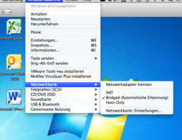
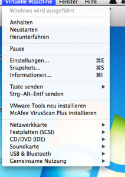
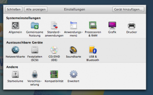
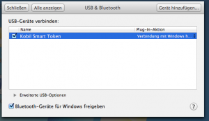
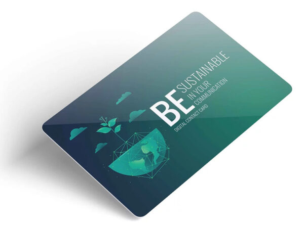

Datev Unternehmen Online auf Macbook
Endlich: Datev Unternehmen Online auf meinem Macbook!
Das Ergebnis zählt: mit ein bisschen Aufwand läuft nun von der Datev Unternehmen Online auf Mac Air 11“ unter Windows 7 über VMWare Fusion. Unternehmen online ist für mich derzeit dass Tool der Wahl um ein eine beleglose Buchhaltung leben zu können. Das Macbook ist für mich auch das Tool der Wahl um absolut mobil und flexibel zu arbeiten. Wie kommen die beiden aber nun zusammen?
Update am 25. Mai: Unternehmen Online läuft sowohl mit VMWare als auch mit Parallels auf dem Macbook!
Inzwischen habe ich für mein Unternehmen eine beleglose Buchhaltung umgesetzt, bei der ich sogar ganz offiziell (Bestätigung vom Finanzamt) nach dem Scannen die Belege entsorgen kann. Ein großer Wermutstropfen hat mich allerdings noch gequält. Das Programm Unternehmen Online von der Datev ist vornehmlich für Windows-Nutzer konzipiert und umgesetzt.
Da die IT-Landschaft bei meinen Kunden sehr verschieden ist (Windows und OS X) arbeite ich, um bei beiden Betriebssystemen fit zu bleiben, mit zwei Systemen, habe aber meine Buchhaltung bisher nur auf dem Windows-Rechner gemacht.
Im meinem stationären Office nutze ich meist Windows und mobil nutze ich seit Jahren mein kleines Macbook Air 11“, auf dem ich jedoch beide Betriebssysteme (Windows 7 über VMWare Fusion und OS X) installiert habe.
Zugegeben, am liebsten würde ich nur noch das Macbook nutzen, weil es einfach durchweg schneller und stabiler läuft, aber bisher gab es drei Hinderungsgründe beide Geräte zu behalten:
- Unternehmen online von der Datev lief bisher nur auf dem stationären Gerät unter Windows
- Ich gebe häufiger Outlookschulungen (unter Windows) und mein altes Macbook Air wird mit zwei Betriebbssystemen schon langsam, damit nicht zuverlässig genug zum Vorführen geeignet und ich habe manchmal den Windowsrechner mitgenommen.
- Ich wollte zu Hause nicht immer alle Geräte an- und umstöpseln, die sich so rund um den Arbeitsplatz befinden
Alle drei Argumente sind jetzt hinfällig:
- Unternehmen online läuft auf dem Macbook
- das neue Macbook (es ist eines der kleineren!) schafft mit sehr guter Geschwindigkeit und zuverlässig mit zwei Betriebssystemen parallel zu arbeiten
- derzeit bleibt nur noch der große Monitor anzustecken (Scanner und Drucker sind kabellos)
Ich habe mich auf das Thema beleglose Buchhaltung eingelassen, weil ich hier ungeheure Einsparmöglichkeiten in der Administration von Unternehmen sehe und möchte das natürlich selbst auch leben. Außerdem möchte ich alle meine Unternehmensinformationen auch mobil zur Verfügung haben. Unternehmen Online konnte ich bisher nur unter Windows am Office-Rechner nutzen. Obwohl der Windows-Rechner auch ein Notebook ist, ist dieses einfach zu schwer, um es mit Vergnügen mit auf Reisen zu nehmen und zwei Notebooks mitzuschleppen geht gar nicht.
Das drei Jahre alte Macbook war inzwischen einfach kapazitätsmäßig zu klein (2GB RAM) um unter Windows auch noch flüssig Unternehmen Online laufen zu lassen. Abgesehen davon, ließen sich die notwendigen Tools gar nicht installieren.
Da ich aber sehr viel unterwegs bin, künftig auch im Ausland, wäre es ärgerlich und unprofessionell, buchhaltungsmäßig an meinen Office-Rechner gebunden zu sein.
Ich hatte bei der Datev gelesen, dass es möglich sei, Unternehmen Online auch unter Windows auf dem Mac zu nutzen. Obwohl die Informationen hierzu nur sehr knapp gehalten sind, Problemlösungen nur sehr verstreut im Netz zu finden sind, Support von der Datev für Mac noch nicht vorgesehen ist, war ich mutig genug, es auszuprobieren.
Ich brauchte ohnehin ein neues Macbook mit mehr Arbeitsspeicher und einer größeren Festplatte. Ein Macbook Pro hätte mir gefallen, ist mir persönlich für ständiges Reisen noch zu schwer. Ich habe mich wirklich an das 11-er Leichtgewicht gewöhnt. Auch um beim Kunden vor Ort im Gespräch Mitschriften und Protokolle zu erstellen, ist das kleine Air sehr dezent und elegant.
Ich habe mich für folgendes Modell entschieden:
- Macbook Air 11“
- 8GB RAM, Arbeitsspeicher
- 256 GB, Festplatte
- 1,7 Ghz, Prozessor
In einer Stunde war dank Time Machine alles überspielt, inkl. VMWare Fusion mit Windows 7. Dann kam die Herausforderung Unternehmen Online zum Laufen zu bringen. Auf einigen Windows-Rechnern bei Kunden habe ich das schon gemacht, aber noch nicht auf einem Macbook.
Insatallation von mIDentity
Frustrierend war zunächst, dass der mIDentity überhaupt nicht erkannt wurde, ein kurzes Aufblinken, dann war Ruhe. Relativ schnell herauszufinden war, dass das Sicherheitspaket Compact von Datev zuerst installiert werden muss. Wenn Sie ohnehin gerade installieren, sollten sie auch gleich noch das Tool Dokumentenviewer und Belegtransfer von der Seite der Datev herunterladen. Außerdem benötigen Sie auch noch ein Silverlight Plugin für Windows.
Alle Downloads verliefen zunächst reibungslos, aber beim Entkomprimieren der Datevtools bekam ich immer eine Fehlermeldung. Dennoch wurden alle Tools vollständig installiert.
Datev bietet auf seiner Seite eine Browsercheck an, den man aber zu gut Deutsch vergessen kann. Ich habe inzwischen alle Tools installiert, Unternehmen online läuft und der Check sagt mir immer noch ich solle eine anderen Bildschirmauflösung wählen (??!), einen PDF Reader und Silverlight installieren. Meine Empfehlung: vergessen Sie den Browsercheck und verlassen Sie sich auf Ihre Installation.
Unschön für mich, aber verschmerzbar ist, dass man sich nur über den Internet Explorer einwählen kann. Ich persönlich bevorzuge Chrome, aber für den Zweck ist der IE ein Kompromiss mit dem ich leben kann.Nun war alle nötige Software installiert, dennoch wurde der mIDentity Stick nicht erkannt. Und noch viel schlimmer, das WLAN, das ich mit dem gleichen Gerät unter OS X noch zur Verfügung hatte, wurde unter Windows nicht erkannt. Zusammen sehr frustig.
Ich habe mich durch –zig Portale und Foren gelesen und immerhin relativ schnell die Lösung für letzteres gefunden. Unter „Virtuelle Maschine/Netzwerkkarte“ müssen Sie „Bridged (Automatische Erkennung) statt „NAT“ aktivieren.

Etwas schwieriger war die Angelegenheit mit dem mIDentity-Stick. Keine Tipps im Internet und ich keine Ahnung mehr wo suchen. Mein Freund ein IT-Hase mit 35 Jahren Leidenschaft und Erfahrung in dem Bereich hatte noch eine Idee. Und dann ging plötzlich alles ganz schnell:-)
Sollten Sie die gleichen Probleme mit der Stick-Erkennung haben, könnte das helfen: Klicken Sie:
– Virtuelle Maschine/Informationen/Alle anzeigen/USB/Bluetooth
– und dann das Häkchen bei Kobil Smart Token setzen.



Ich habe inzwischen Unternehmen Online mit allen seinen Funktionlitäten überprüft, den Belegtransfer eingerichtet und alles läuft reibungslos.
Die Ordner auf die der Belegtransfer liegen bei mir in der Cloud, damit ich sowohl vom Macbook als auch vom Windows-Rechner im Office jederzeit den Belegtransfer durchführen kann. Das ist sehr komfortabel, da ich unterwegs (mit dem iPhone) auch schon scannen kann und die Scans nur einmal in die Hand nehme, um sie richtig abzulegen.
Im Office scanne ich (dank verschiedener Scannerprofile beim Fuijtsu iX500) natürlich sofort in den richtigen Ordner, ohne die Belege überhaupt noch einmal „in die Hand“ zu nehmen und zuzuordnen
Vielleicht fragen Sie sich, warum ich mir das überhaupt angetan habe, Unternehmen online in die Macwelt zu integrieren, denn es gibt doch auch andere Tools um elektronische Belege zu verarbeiten (z.B. Scopevisio, Lexoffice). Meine Gründe:
- die meisten Steuerberater nutzen Datev und die Zusammenarbeit mit Unternehmen online ist am einfachsten (wenn es der Steuerberater beherrscht) um eine effiziente Buchhaltung aufzusetzen
- der gescannte Beleg „hängt“ untrennbar an der Buchung
- die Datev bietet mir eine 10-jährige revisionssicher Aufbewahrung aller gescannten Belege
- das zusammen mit Prozessen ist das die Basis dafür, dass ich die Papierbelege nach dem Scannen offiziell entsorgen darf
Sollten Sie Fragen oder weitere Hinweise zur Nutzung von Unternehmen online auf dem Mac haben, kommentieren Sie hier gern. Andere Leser und ich freuen sich über jeden Hinweis der diese „Kombi“ leichter macht. Wenn Sie Interesse an einem Seminar oder einer Beratung vor zu diesem Thema haben, lassen Sie es mich gern wissen.
Weitere Artikel

Digitale Visitenkarten
Auch wenn analoge Visitenkarten schön sein können, wenn Sie hochwertig sind, erweisen sie sich nicht mehr wirklich als praxistauglich. Rein digitale Visitenkarten mit QR Code, deren hinterlegte Informationen man schnell ändern …
App-Experten fragen: Der Digitalisierungsfalle entkommen
Ask the App Experts (AtAE) ist der Ausbruch aus der Digitalisierungsfalle. Mit AtAE bekommen Ihre Mitarbeitenden Antworten auf ihre persönlichen Software-Fragen bezüglich ihrer individuellen Probleme. „Software is eating the …